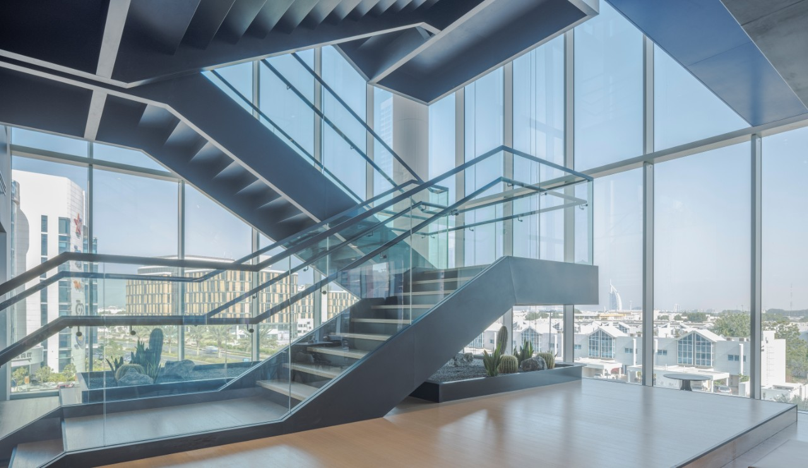

Environmentally Friendly Insulated Glass
Environmentally Friendly Insulated Glass is designed to improve energy efficiency, reduce environmental impact, and support sustainable building practices. By combining high-performance glass types with insulated glass unit (IGU / DGU) construction, these systems help minimise heat loss, reduce energy consumption, and enhance indoor comfort throughout the year. Sustainable insulated glazing plays an important role in modern construction by lowering heating and cooling demands, reducing carbon emissions, and supporting long-term building performance without compromising safety or visual clarity.
How environmentally friendly insulated glass works:
Insulated glass units consist of two or more panes of glass separated by a sealed cavity. When combined
with energy-efficient glass options and advanced spacer systems, this cavity acts as an insulating
barrier that slows heat transfer. This helps maintain stable indoor temperatures while reducing the
reliance on artificial heating and cooling systems.
Key benefits of Environmentally Friendly Insulated Glass include:
-
Improved thermal insulation and energy efficiency
Reduces heat loss in winter and heat gain in summer, supporting lower energy consumption and improved comfort. -
Reduced carbon footprint
Lower energy demand contributes to reduced greenhouse gas emissions over the lifespan of the building. -
Enhanced indoor comfort
More stable internal temperatures help eliminate cold zones near windows and reduce drafts. -
Condensation control
Improved insulation helps raise the internal glass surface temperature, reducing the likelihood of condensation forming. -
Long-term durability and sustainability
High-quality insulated glass units are designed for longevity, reducing the need for frequent replacement and material waste.

Where environmentally friendly insulated glass is commonly used
- Residential homes seeking improved energy efficiency and comfort
- Commercial and office buildings aiming to reduce operational energy costs
- Green building projects and sustainability-focused developments
- Renovations and energy-efficiency upgrades to existing structures
- Skylights, façades, and large glazed areas where thermal control is essential
Available options & configurations
- Double or triple glazed insulated glass units
- Low-E coated glass to reflect heat while maintaining natural light
- Clear, tinted, laminated, or toughened glass combinations
- Warm-edge or aluminium spacer systems depending on performance requirements
- Custom sizing and configurations for residential and commercial applications
By selecting environmentally friendly insulated glass, clients invest in a glazing solution that supports sustainability goals while delivering long-term performance, comfort, and energy savings. Our team can assist in specifying the most suitable insulated glass configuration based on building type, location, and performance requirements.
Northern Hardware & Glass (Pty) Ltd.
If you would like to request a quote or discuss environmentally friendly glazing solutions, please contact us.
Contact Us